Experiment 1a: Making Measurements
Delay in the presentation of this promised document. I have extended the submission of the Lab 1a report to Tuesday 25 Aug at 11:59 pm, pushing it another 24 hours. Sorry.
Why the delay in my presenting this document? I wanted to prepare the web document with reduced (thumbnail-like) images that when you click them, they open to original size in a new window. I actually wrote this (JavaScript now TypeScript) code more than 25 years ago (late 90s) and resurrected it and was trying to improve the functionality. The revisions became an obsession...when I get to scripting, it's to the point of denying sleep and risking illness particuularly in a person who has entered the nearly-dead years of life. (I joke, I joke...). Anyway, I challenge myself always to make better web documents although I am far from being at the level of the 6-figure pros.
Here is the lab manual excerpt for this experiment (Lab 0a).
This experiment sort of a continuation of the first week (Lab Exp 0a) work which introduced you to lab equipment and some techniques on how to use the equipment. Experiment 1a focuses on an understanding of the quantitative, and particularly about important equipment/instruments that have a high accuracy and precision. Precision in these instruments is about significant digits (significant figures).
Rulers, graduated cylinders, burets and the old-style triple beam balances have division marks on the equipment. The measure of the volume of a liquid or the mass of anything (on these non-electronic balances) had to account for measures that not only fell exactly on a division mark, but also when the measure fell in between division marks. The in-between measure added another digit to the right, and that digit would be the final indicator of precision. Thus for a buret with division marks spaced 0.1 mL apart, the fluid meniscus falling in between make the volumetric determination to have a precision of 0.01 mL.
Welcome to making measurements.
This is the part that should interest the student, as these are things observed that are mistakes in producing the report.
Below is the report produced by the instructor following the procedure used by the students. While the instructor is an experienced pro at this, the results are something the student can achieve. Most students actually do it flawlessly the first time, and the balance of the students make corrections and achieve understanding to the point of a fine report.
In the images below, on the left-hand side I show the Questions
of the MyOpenMath assessment. On the right hand side are images of the printed lab manual as they would be marked up by the student by hand.
The most important aspect of these images is that the online and handwritten form should like almost identical. They should look absolutely identical on measurements and data obtained in the lab, these data being quantities which are numbers with units. They should also look identical on calculations, showing the math expressions, equations, and operations done on the quantities to produce resultant quantities. For questions requiring thought and wording, the keywords and key concepts should be pretty much the same.
(Note: MyOpenMath calls a contained work like a lab experiment or quiz or homework or exam an assessment. Canvas usually calls these assignments. Dueling educational resource tools.)
You should click on any image to see it in the original size in a new window. Do not try to read a thumbnail size of the image. (Again, I spent considerable time, recently the last day or two, not to mention hours over a 25-year period, making this web document hopefully interestingly functional.
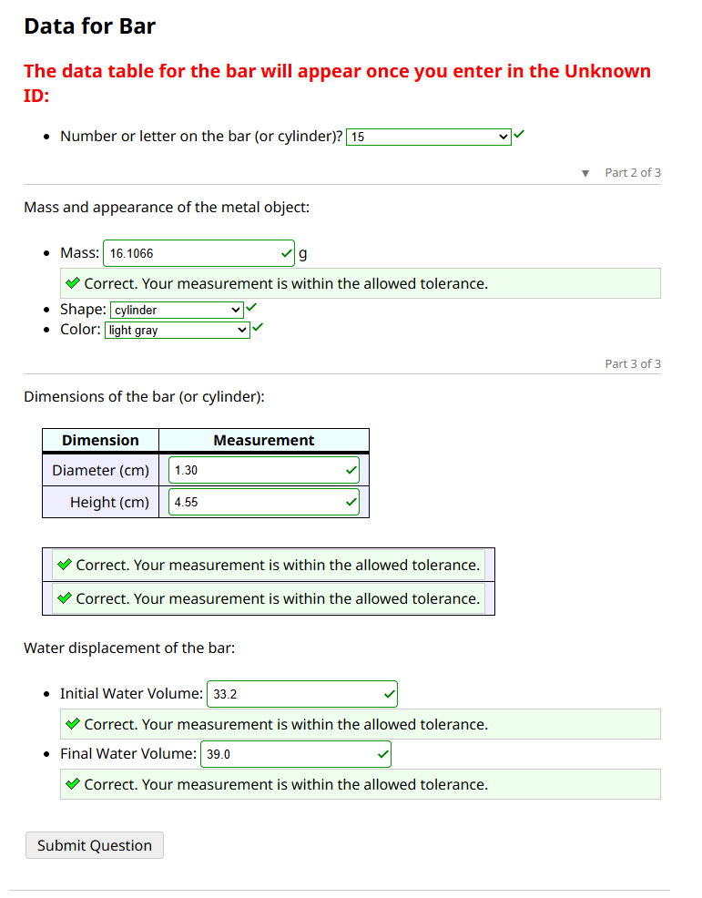
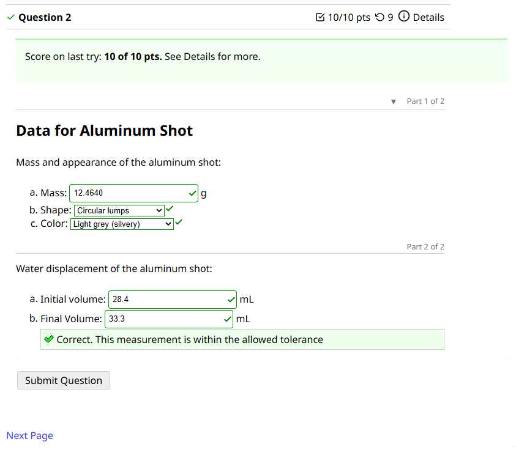
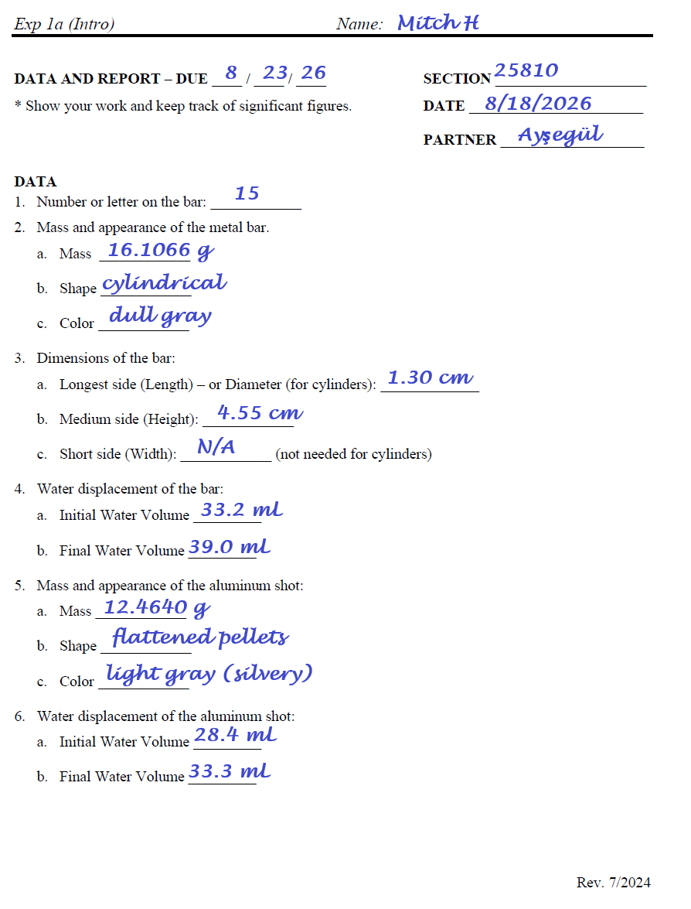
centimeters-inches), but in the end, these operations have to make sense even though allowed. So there's that.
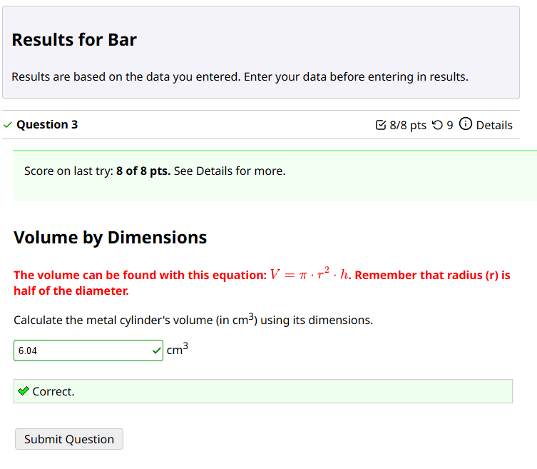
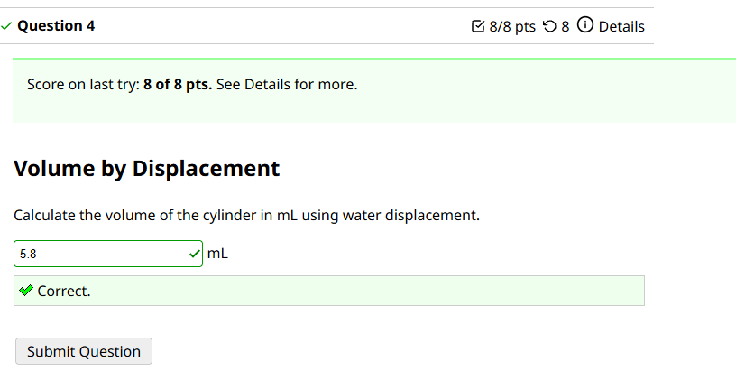
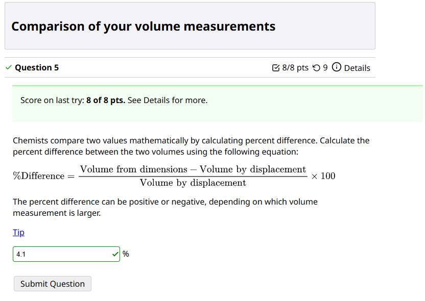
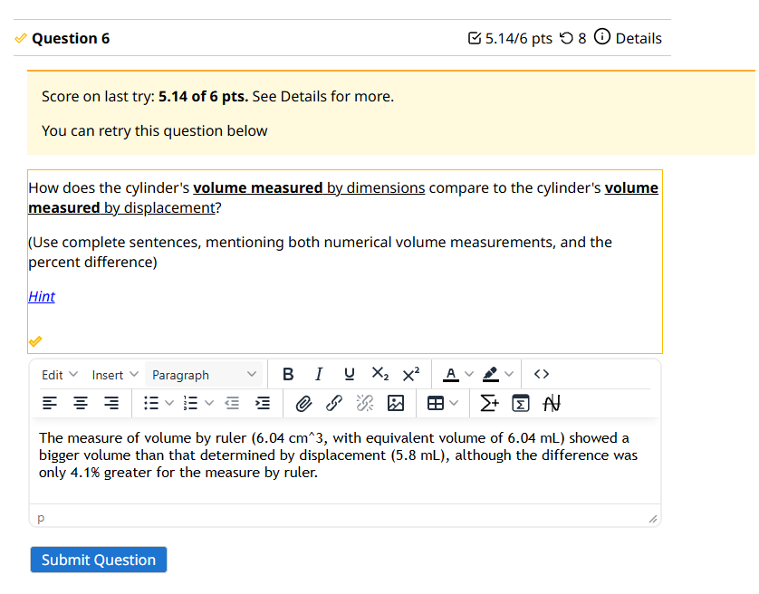
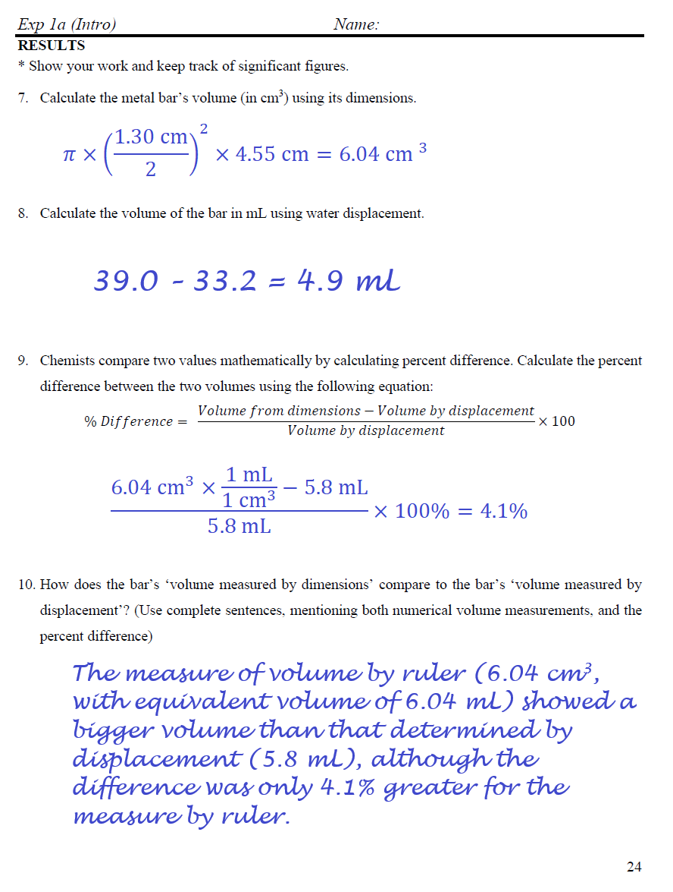
retry penalties, meaning the student made repeated submissions as part of guessing to get the right answer. These retry penalties particularly apply to multiple choice questions, so be careful of those
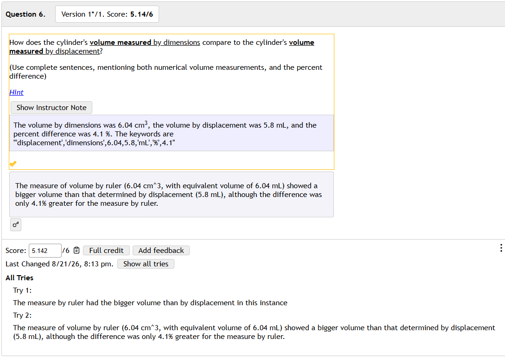
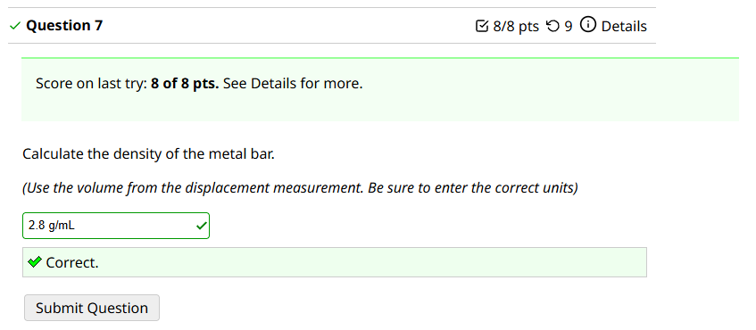
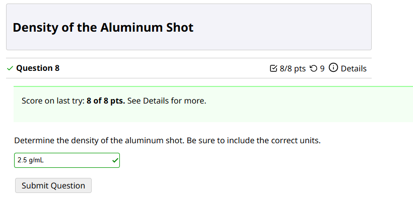
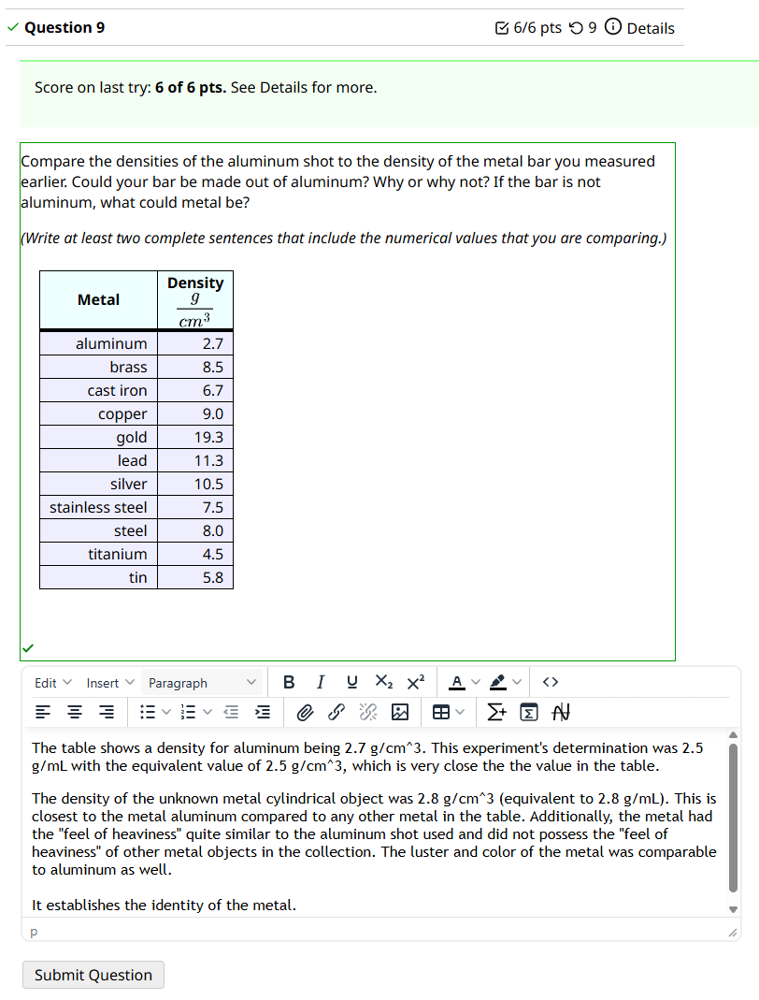
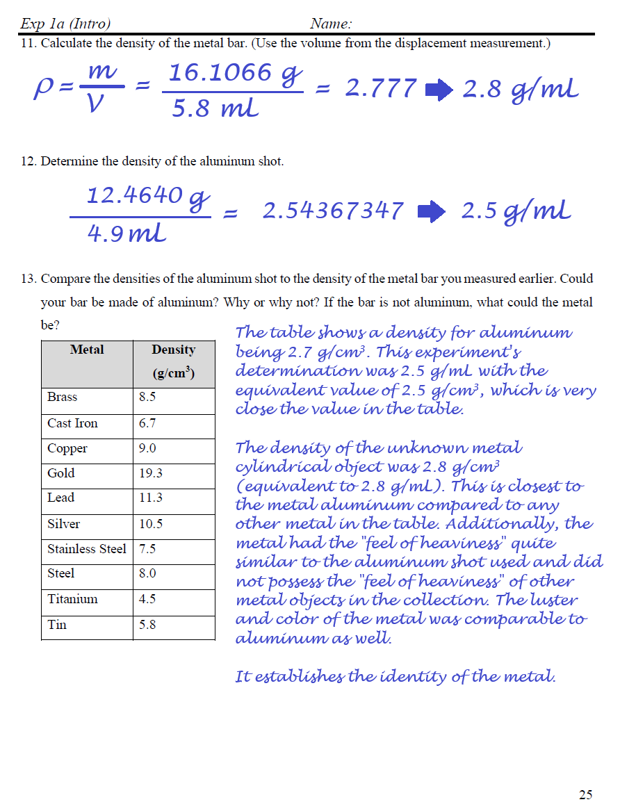